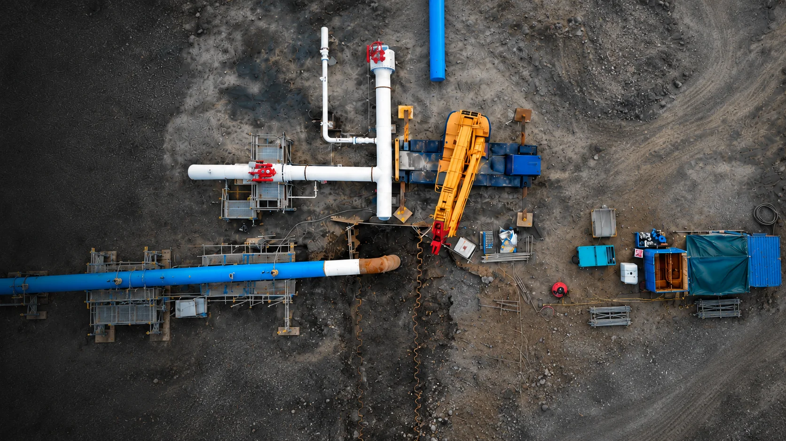

Digital pressure gauge
43.51 bar
Latest recorded · 1530 hrs

Latest recorded · 1530 hrs
Latest recorded · 1530 hrs
Latest recorded · 1530 hrs
GPP4 digital gauge · GPS receiver gauge · GPS UPV
All series use the same pressure scale (bar). Hover over or focus on a point for its reading. Lines connect recorded samples; they do not represent continuous measurements. No readings are extrapolated.
20 readings · 0600–1530 hrs · Pressure in bar
9 readings · 1130–1530 hrs · Pressure in bar